Yetakchi tibbiy nashrlar va axborot portallaridagi maqolalarimiz hamda intervyularimiz.
Umurtqa pogʻonasi kasalliklarini davolash boʻyicha ekspert bilimlarimiz va tajribamiz bilan boʻlishamiz.
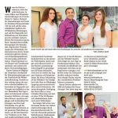
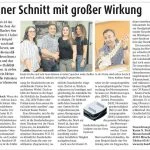
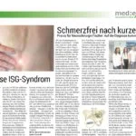
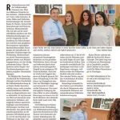
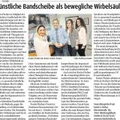
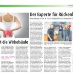
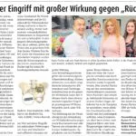
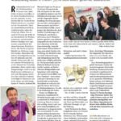
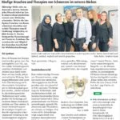
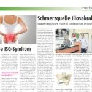
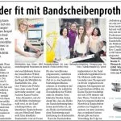
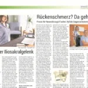